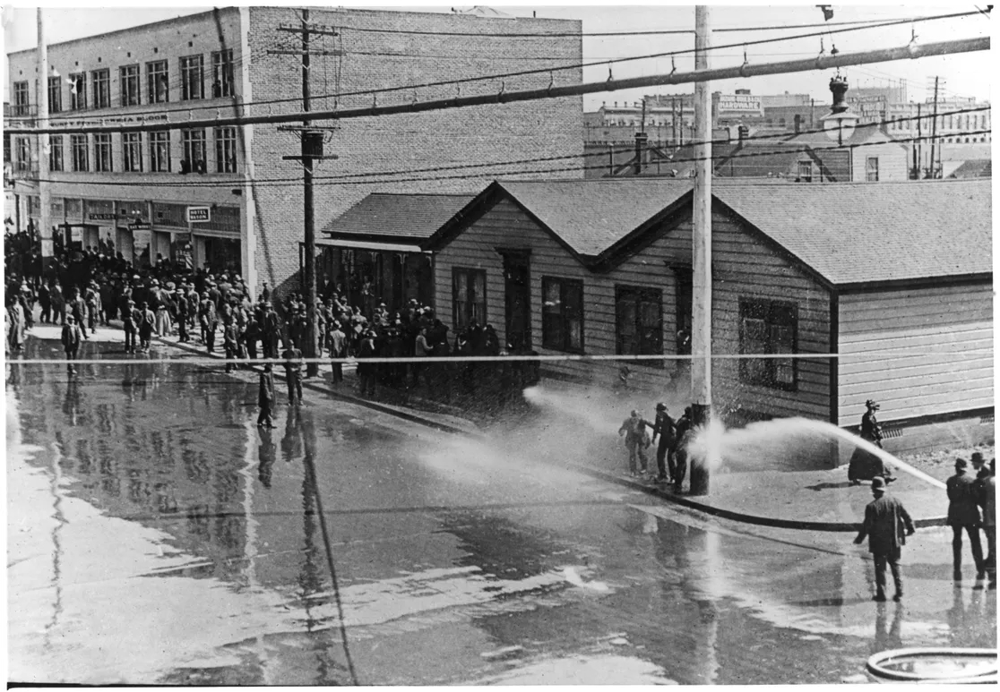
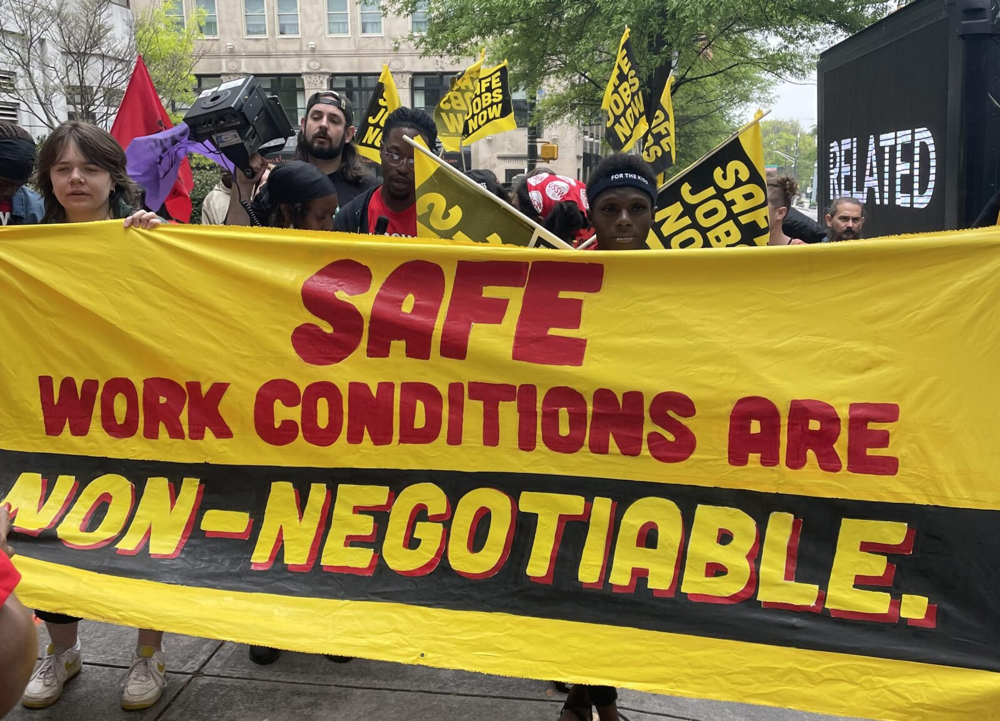

US History — Semester 1, Lesson 03
In 1892, a Kansas farmer named Mary Elizabeth Lease stepped onto a stage in front of thousands of people and delivered one of the most famous lines in American political history. She told the crowd that farmers needed to "raise less corn and more hell." The audience exploded. She was not a politician. She was not wealthy. She was a mother of four who had watched her neighbors lose their farms to railroad companies and banks while politicians in Washington did nothing.
Between 1880 and 1920, millions of Americans decided that doing nothing was no longer an option. Farmers, factory workers, religious leaders, and women reformers all demanded that America actually live up to the promises it had made. They called themselves Populists. They called themselves Progressives. And they changed the country permanently.

Mary Elizabeth Lease, Kansas Populist orator, circa 1890s. Wikimedia Commons.
After the Civil War, American farmers seemed like they should have been thriving. The country was growing fast. Cities were hungry for food. But farmers were not getting rich. They were going broke. The reason was a system that was rigged against them at every turn.
Railroads charged whatever they wanted to ship a farmer's crop to market. Banks charged punishing interest rates on the loans farmers needed to buy seeds and equipment. When crops were good, prices dropped so low that farmers barely broke even. When crops failed, banks foreclosed. Millions of farm families lost land their parents had broken their backs to buy. They were working harder than ever and falling further behind every year.
By the late 1880s, farmers began organizing. They formed the Farmers' Alliance, a network of cooperatives and political clubs that spread across the South and Midwest like wildfire. By 1892, they had launched a new political party: the PopulistA political movement in the 1880s and 1890s that fought for the rights of ordinary farmers and workers against powerful banks, railroads, and wealthy elites. Party, also called the People's Party.

Populist Party campaign material, 1892. The People's Party demanded government ownership of railroads and a graduated income tax. Wikimedia Commons / Library of Congress.
The Populist platform, written in Omaha, Nebraska in 1892, was radical for its time. Populists demanded that the federal government take ownership of the railroads so no private company could gouge farmers on shipping rates. They demanded a graduated income tax: a system where wealthy people would pay a higher percentage of their income than poor people. They demanded that U.S. senators be elected directly by voters instead of chosen by state legislatures. They demanded that workers be paid in paper money backed by silver, not just gold, so there would be more money in circulation and crop prices would rise.
The Populists lost the 1896 presidential election to Republican William McKinley. But they did not lose everything. Over the next twenty years, nearly every major reform the Populists demanded became law. Their ideas were ahead of their time; the country just needed a generation to catch up.
Today, when politicians talk about taxing the rich at higher rates, regulating corporations, or protecting family farmers from big agribusiness, they are using arguments that Kansas farmers made in dusty meeting halls in 1892.
"We meet in the midst of a nation brought to the verge of moral, political, and material ruin. Corruption dominates the ballot-box, the Legislatures, the Congress, and touches even the ermine of the bench. The newspapers are largely subsidized or muzzled, public opinion silenced, business prostrated, homes covered with mortgages, labor impoverished, and the land concentrating in the hands of capitalists."
Ignatius Donnelly, Preamble to the Omaha Platform, People's Party, July 4, 1892
This was the opening shot of the Populist movement — written on the Fourth of July to make clear that the farmers believed American democracy itself was broken, not just their bank accounts.
1. According to this document, what specific problems are destroying the country? List at least three things the author names.
2. How does this connect to our Essential Question? What does this document tell us about why ordinary people decided they had to act?

First edition of The Jungle by Upton Sinclair, 1906. His descriptions of Chicago meatpacking plants triggered a national scandal. Wikimedia Commons.
By 1900, the Populist Party was finished. But the problems that had created it were not. Millions of Americans were now crammed into filthy factory tenements in cities like Chicago, New York, and Pittsburgh. Children as young as six worked in coal mines and textile mills. Meat packing plants sold food contaminated with rat droppings, spoiled meat, and worse. Standard Oil controlled nearly all of America's oil supply and crushed any competitor that got in its way. The richest 1 percent of Americans owned more wealth than the bottom 99 percent combined.
A new generation of activists called themselves ProgressiveA reformer in the early 1900s who believed government should fix the problems caused by industrialization, such as child labor, unsafe food, and corporate monopolies.s. They believed that the government had both the power and the responsibility to fix these problems. And unlike the Populists, who were mostly rural and Southern, Progressives came from cities, universities, churches, and newspapers. They were middle-class professionals who had the education and the connections to make things happen in Washington.
The Progressives used a new weapon: investigative journalism. Writers called muckrakers dug into the ugliest corners of American industry and published what they found. Upton Sinclair's 1906 novel The Jungle described the Chicago meatpacking industry in nauseating detail. When President Theodore Roosevelt read it, he reportedly threw his breakfast sausage across the room. Within months, Congress had passed the Pure Food and Drug Act and the Meat Inspection Act. Words had become law.

Lewis Hine, child workers in a textile mill, circa 1908-1910. Hine's photographs for the National Child Labor Committee helped end child labor in American factories. Library of Congress.
One of the most powerful Progressive weapons was the camera. A photographer named Lewis Hine traveled across the country documenting child labor for the National Child Labor Committee. His photographs showed eight-year-olds with missing fingers operating massive looms; twelve-year-olds crouching in coal mine shafts. The images were impossible to argue with. By 1916, Congress passed the Keating-Owen Child Labor Act; the era of routine child labor in American factories was ending.
The Progressive Era produced an explosion of constitutional change. The 16th Amendment (1913) created the federal income tax: the Populists' old demand, finally law. The 17th Amendment (1913) established direct election of U.S. senators: another Populist demand, finally law. The 18th Amendment (1919) banned alcohol under Prohibition. The 19th Amendment (1920) gave women the right to vote. In less than a decade, the Constitution was amended four times. That had never happened before and has not happened since.

Women's suffrage parade, Pennsylvania Avenue, Washington D.C., March 3, 1913. Library of Congress.
Women were at the center of nearly every Progressive Era reformA change made to fix something wrong with a law, system, or institution — usually by working through government rather than revolution.. Jane Addams ran Hull House in Chicago, a settlement house where immigrant families could get English classes, childcare, and legal help. Florence Kelley fought for minimum wage laws and an end to child labor. Ida B. Wells documented the horror of lynching and demanded federal anti-lynching laws. These women could not vote for most of this period; yet they changed the country more than most elected officials did.
When you see a food safety label on a package, a minimum wage law, or a child labor prohibition, you are looking at the direct result of this era. The Progressives built the regulatory state that still governs American business today.
Behind every political argument about poverty and government action, there is a deeper argument about why people are poor in the first place. During the Progressive Era, two completely opposite ideas were fighting for the soul of American society.
Argued that society, like nature, is a competition where the strongest survive. If you are poor, it is because you are weak or lazy. Government assistance only helps the weak survive and breed, which makes society weaker overall. The rich are rich because they are naturally superior. Leave the market alone and let the winners win.
Argued that Christian duty requires believers to fight poverty and injustice in this world, not just pray for salvation in the next. If people are poor, it is because the system is unjust. Christians are responsible for changing that system. Faith without action to help the suffering is empty.

Walter Rauschenbusch, Baptist minister and Social Gospel leader, circa 1907. Wikimedia Commons.
Social Darwinism took its name from Charles Darwin's theory of evolution but misapplied it to human society. Darwin's theory described how species evolved through natural selection over millions of years. Social Darwinists, led by thinkers like Herbert Spencer and Andrew Carnegie, applied this to economics: the poor are poor because they lost in a fair competition, and helping them only interferes with the natural order. Carnegie himself wrote a famous essay called "The Gospel of Wealth," arguing that the rich had a duty to spend their money on libraries and universities — but not on wages or labor protections.
The Social GospelA religious movement in the late 1800s and early 1900s that argued Christians had a duty to fight poverty and injustice in society, not just focus on personal salvation. movement pushed back hard. A Baptist minister named Walter Rauschenbusch published Christianity and the Social Crisis in 1907. He argued that Jesus's teachings were fundamentally about justice in this world: feeding the hungry, housing the poor, treating workers fairly. He said that an economy that kept millions in poverty while a few grew fabulously rich was a sin, not just a policy problem.
The Social Gospel gave moral fuel to the Progressive movement. It told reformers that their work was not just politically correct but spiritually required. Settlement houses like Hull House were often run by people whose motivation was religious as much as political. The argument between these two worldviews: whether poverty is a personal failure or a systemic injustice: is still the central debate in American politics today.
"Whoever sets any bounds for the reconstructive power of the religious life over the social order, limits the redemption of Jesus Christ... The gospel, to have power over an age, must be the highest expression of the moral and spiritual truths held by that age."
Walter Rauschenbusch, Christianity and the Social Crisis, 1907
Rauschenbusch was telling American churches that they could not stay silent about poverty and injustice; he argued that a Christianity that only worried about individual souls and ignored suffering in the streets had already lost its power.
1. In your own words, what is Rauschenbusch arguing that the church must do? What does he say happens to religion if it refuses?
2. How does this connect to our Essential Question? How did religious ideas like this one push America to change?


Left: George Whitefield, key preacher of the First Great Awakening, 1740s. Right: Camp meeting revival of the Second Great Awakening, circa 1800-1830. Wikimedia Commons.
Long before the Populists and Progressives, America had another kind of mass movement: waves of religious revival that swept the country and changed its politics just as dramatically. Historians call these waves the Great Awakenings, and there were four of them between the 1730s and the early 1900s.
The First Great Awakening hit the American colonies in the 1730s and 1740s. Preachers like George Whitefield drew crowds of thousands in open fields. They preached that salvation was a personal, emotional experience: available to everyone, not just the well-born or the educated. This was a radical democratic idea in a society still organized around class and privilege. If every soul was equal before God, why weren't people equal before the law?
The Second Great Awakening rolled through America between roughly 1800 and 1840. It produced camp meetings where thousands of people gathered outdoors for days of preaching and singing. It also produced the abolition movement. If slavery was a sin, the argument went, then God required Christians to end it. Many of the most committed abolitionists: people who dedicated their lives to destroying slavery: were motivated entirely by religious conviction. The Second Great Awakening made the Civil War possible by convincing millions of Northerners that slavery was not just economically problematic but morally intolerable.

The Bill of Rights, original document, National Archives, Washington D.C. The First Amendment protects both the free exercise of religion and the government's separation from it. Wikimedia Commons.
Running through all of these revivals was a fundamental question about religious libertyThe right to practice any religion you choose, or no religion, without the government telling you what to believe or forcing you to support a particular church. in America. The First Amendment does two things that seem almost contradictory: it forbids the government from establishing an official religion, AND it protects people's right to practice any religion freely. This double protection was deliberately designed. The founders had seen what happened in Europe when governments picked winners in religious disputes; they wanted no part of it in America.
But religious liberty has always been contested. The Great Awakenings produced movements that wanted to use the power of government to enforce their religious vision: Prohibition being the clearest example. The argument about where religious freedom ends and government neutrality begins is one of the oldest and most unresolved arguments in American life.
Today, debates about prayer in public schools, religious exemptions from civil rights laws, and the role of faith in politics all trace directly back to the First Amendment tension the founders built in deliberately.

IWW (Industrial Workers of the World) free speech protesters, circa 1912. In San Diego, labor activists were beaten and jailed for speaking publicly against railroad monopolies. Wikimedia Commons / Library of Congress.
In 1912, the Progressive Era came to Fifth Street in downtown San Diego in the form of a fistfight between workers and hired vigilantes. The Industrial Workers of the World (IWW), known as the Wobblies, had set up a soapbox on a street corner to organize low-wage workers against the streetcar and railroad monopoly of John D. Spreckels. Spreckels controlled San Diego's newspapers, streetcar lines, water company, and ferry service. He was the city's version of Standard Oil: one man, nearly all the power.
When San Diego banned public speaking in a large section of downtown to silence the IWW, hundreds of activists flooded into the city from across California to deliberately break the law and get arrested. The jails overflowed. Vigilantes beat protesters with clubs while police watched. The American Civil Liberties Union later called it one of the most violent free speech fights in American history. Emma Goldman came to San Diego to protest and was driven out of the city at gunpoint. The fight put San Diego on the national map of Progressive Era labor battles.
The minimum wage. Food safety. Child labor laws. The income tax. The right to organize a union. Religious exemptions from anti-discrimination laws. Government surveillance of activists. Every one of these is a live political fight right now. The Populists and Progressives did not settle these arguments; they gave us the vocabulary and the tools to keep having them.

Modern labor protest, United States. The same arguments about corporate power and workers' rights that Populists made in 1892 are still being made today. Wikimedia Commons.
If you were a reformer today, what would be your cause; and what tool from this era: journalism, legislation, protest, or religion: would you use to fight for it?